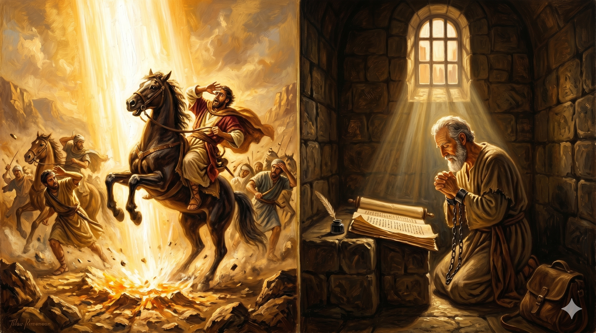

로마의 셋집 감방 안에서 쇠사슬에 묶인 채 무릎을 꿇고 두 손을 모아 기도하는 바울 — 좁은 창으로 스며드는 한 줄기 빛이 그의 얼굴을 비추고, 눈을 감은 그의 표정에는 어떤 쇠사슬도 막을 수 없는 깊은 평화와 경배가 가득하다
"이러므로 내가 하늘과 땅에 있는 각 족속에게 이름을 주신 아버지 앞에 무릎을 꿇고 비노니… 그리스도의 사랑의 너비와 길이와 높이와 깊이가 어떠함을 깨달아 하나님의 모든 충만하신 것으로 너희에게 충만하게 하시기를 구하노라" — 에베소서 3:14, 18–19
에베소서 3장의 기도는 바울이 로마 감옥에서 쓴 것입니다. 쇠사슬에 묶인 몸으로, 재판을 기다리는 상황에서, 그는 무릎을 꿇었습니다. 그가 간구한 것은 자신의 석방이 아니었습니다. 에베소 성도들이 그리스도의 사랑의 너비와 길이와 높이와 깊이를 알게 되기를 구했습니다. 이 네 방향의 측량은 사실 측량 불가능함을 선언하는 역설적 표현입니다. 모든 성도와 함께 깨달아도 다 알 수 없는 사랑 — 그것이 그리스도의 사랑이라고 바울은 고백합니다.
다메섹 도상에서 빛에 쓰러진 청년 사울이, 돌에 맞고 파선을 당하고 채찍질을 견뎌온 사도 바울이, 이제 감옥에서 쓴 마지막 유언 같은 기도가 바로 이것입니다. 그 모든 여정을 지나온 사람이 마지막으로 선언하는 것은 승리의 기록도, 공로의 나열도 아닙니다. 측량할 수 없는 사랑 앞에 무릎 꿇은 한 사람의 경배입니다. 바울의 신학 전체, 그의 삶 전체가 이 한 기도 안에 녹아 있습니다. "하나님의 모든 충만하신 것으로 충만하게 하시기를." 이것이 그가 원한 전부였습니다.

다메섹 도상의 강렬한 빛에서 로마 감옥의 좁은 창 빛까지 — 바울의 여정을 상징하는 두 개의 빛, 처음에는 그를 쓰러뜨린 빛이 마지막에는 그를 감싸는 빛이 되었음을 표현하는 신학적 이미지
바울은 무릎을 꿇었습니다. 로마 제국 앞에서도, 산헤드린 앞에서도 굽히지 않았던 그 무릎이, 하나님 아버지 앞에서 꺾였습니다. 강함과 굴복이 같은 무릎에서 나온 것입니다. 오늘 우리는 무엇 앞에 무릎을 꿇고 있습니까? 세상의 압박 앞에서 굽혀지는 무릎인지, 아니면 하나님 아버지의 은혜 앞에서 자발적으로 꺾이는 무릎인지를 돌아보게 합니다. 진정한 자유는 하나님 앞에 자발적으로 엎드리는 데 있습니다.
"너희로 충만하게 하시기를" — 바울의 기도는 자신을 위한 것이 아니었습니다. 그는 감옥에서 남을 위해 기도했습니다. 이것이 그리스도의 사랑의 너비와 길이를 이미 경험한 사람의 자연스러운 반응입니다. 그 사랑이 크면 클수록, 우리는 자신을 넘어 타인을 향하게 됩니다. 오늘 내 기도 목록에 나 자신 외에 누가 있습니까? 바울처럼, 감옥 같은 상황에서도 타인을 위해 무릎 꿇는 기도자가 되기를 도전합니다.
쇠사슬에 묶인 채 남을 위해 무릎 꿇은 사람.
그리스도의 사랑을 깨달은 사람은 그렇게 삽니다.
오늘, 당신은 누구를 위해 무릎 꿇겠습니까?